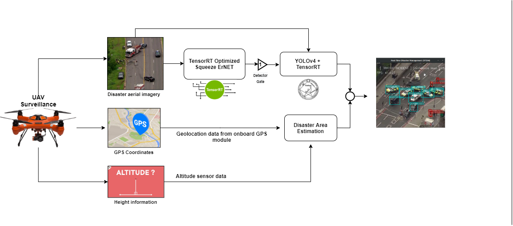

Real-Time Disaster Management (RTDM) on Embedded UAV Platforms
Status: Completed (Undergraduate Research, NUST)

Problem
Disaster response scenarios require rapid situational awareness under strict constraints on computation, power, and latency. UAV-based systems must operate fully on-board while performing accurate disaster detection and victim localization.
System overview
I designed a Real-Time Disaster Management (RTDM) module that sequentially integrates quantized image classification and object detection models. The system processes live UAV camera feeds and communicates actionable insights to a ground control station.
Key contributions
- Designed Squeeze-ErNet, a quantized architecture achieving ~94.4% accuracy at ~510 FPS on NVIDIA Jetson TX2.
- Systematic evaluation of quantization schemes for performance–accuracy trade-offs.
- Created the ODDER dataset for aerial emergency response (2 classes, 1400+ images).
- Deployment and power analysis on embedded UAV hardware.